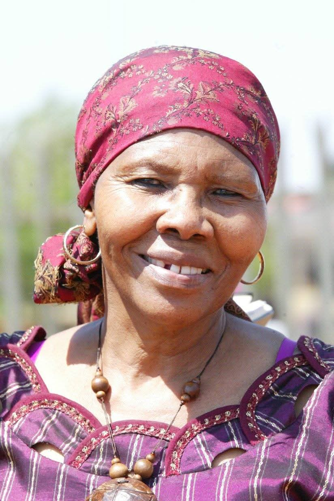

EUCATE A CHILD AND EMPOWER THE NATION
Meet The Founder Of TSCP
Tony Gloria Bodibe
Project origin
Tsogang Sechaba, meaning "WAKE UP AFRICA", was founded in 1999 by Tony Gloria Bodibe. The organization officially registered with Department of Social Development (DSD) on 16 October 2002, enabling access to funding, resources, and partnership. Since then, Tsogang Sechaba Community Project has continued to grow, responding to community needs and escalating its commitment to providing comprehensive support services.
Our Story
The Tsogang Sechaba Community Project is a dedicated organization committed to empowering vulnerable communities affected by HIV, STDs, and gender-based violence. Through a supportive network and comprehensive psychosocial services, we aim to foster resilience, ensure holistic well-being, and promote social justice among children, young adults, youth, and orphaned vulnerable children. Our mission is grounded in the belief that every individual deserves accessible and sustainable care to lead a dignified life. We strive to create a society where everyone has the support they need to thrive, free from the impacts of these social challenges.
Mission and Vision
Our mission
Our mission is to empower and support vulnerable communities affected by HIV, STDs, and gender-based violence through comprehensive psychosocial services, ensuring holistic well-being and fostering resilience among children, young adults, youth, and orphaned vulnerable children. We strive to provide accessible and sustainable care that promotes health, dignity, and social justice.
Our vision
A society where every individual, regardless of their circumstances, can access the support they need to live healthy, empowered lives free from the impacts of HIV, STDs, and gender-based violence.
Objectives
HIV and STD Prevention and Care:
Gender-Based Violence (GBV) Intervention:
Psychosocial Support for Vulnerable Population:
Nutritional Support:
Collaboration and Partnerships:
Caregiver Support and Training:
Health and Wellness Initiatives:
Social and Emotional Support Groups:
Victim Empowerment Programme:
Achievements and Challenges met
You said:
- What did the organization achieve in the current year 2024/2025? -> The challenges met by the organization and the plans to mitigate them.
- What value will the organization bring to the Department in the 2025/2026 financial year as per their objectives in the business plan? -> Sustainability plan that will ensure that services that are required are not hampered.
ChatGPT said:
In the current year, Tsogang Sechaba Community Project successfully implemented and expanded its programs to address critical community needs:
Milestones
- Reached over 2,500 beneficiaries with HIV education, testing, and treatment services.
- Increased awareness of HIV prevention methods through community campaigns and workshops, reducing stigma and improving testing rates.
- Provided psychosocial support and counseling to over 300 GBV survivors, empowering them to rebuild their lives.
- Trained 50 community advocates to lead GBV awareness and prevention initiatives.
- Delivered 10,000 balanced meals to vulnerable children and adults.
- Partnered with local suppliers to establish sustainable food delivery channels for ongoing nutritional programs.
- Trained 75 caregivers in psychosocial skills and caregiving techniques, enhancing the quality of care for vulnerable populations.
- Established monthly caregiver support groups to provide a platform for shared learning and emotional resilience.
- Assisted over 200 victims of crime and abuse through trauma counseling and legal aid support.
- Introduced a referral system with SAPS to streamline victim support.
HIV/AIDS Prevention and Care:
Gender-Based Violence (GBV) Intervention:
Nutritional Support:
Caregiver Training and Support:
Victim Empowerment Services:
Obstacles
Challenge: Limited Funding
- Appointment of a Consultant Fundraising Manager to secure grants, partnerships, and donor funding.
- Diversifying revenue streams through partnerships with corporate sponsors and government initiatives.
Challenge: High Demand for Services
- Recruitment of additional qualified social workers and volunteers.
- Streamlining service delivery through digital tools and case management systems to handle higher caseloads.
Challenge: Limited Access to Remote Areas
- Expanding mobile service units to deliver support directly to hard-to-reach areas.
- Partnering with local community leaders to coordinate outreach efforts.
Difficulty in meeting the financial demands of expanding services and covering operational costs.
Mitigation Plan:
Increased demand for psychosocial support, testing, and GBV intervention exceeded the organization’s capacity.
Mitigation Plan:
Challenges in reaching beneficiaries in rural and informal settlements.